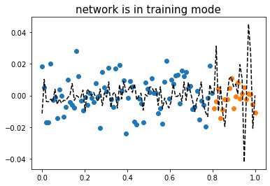

깊은신경망(4)– 지난시간리뷰, 드랍아웃
강의영상
https://youtube.com/playlist?list=PLQqh36zP38-xIaM33fBWd9bCF_FsXlg2f
imports
지난시간리뷰
데이터
- model: \(y_i = (0\times x_i) + \epsilon_i\)

모든 데이터를 사용하여 적합 (512, relu, 1000 epochs)
torch.manual_seed(1)
net = torch.nn.Sequential(
torch.nn.Linear(in_features=1,out_features=512),
torch.nn.ReLU(),
torch.nn.Linear(in_features=512,out_features=1)
)
loss_fn = torch.nn.MSELoss()
optimizr = torch.optim.Adam(net.parameters())
for epoc in range(1000):
## 1
yhat = net(x)
## 2
loss = loss_fn(yhat,y)
## 3
loss.backward()
## 4
optimizr.step()
optimizr.zero_grad()
전체데이터를 8:2로 나누어서 8만을 학습
- 데이터를 8:2로 나눈다
- (xtr,ytr) 만 가지고 net를 학습시킨다.
torch.manual_seed(1)
net = torch.nn.Sequential(
torch.nn.Linear(in_features=1,out_features=512),
torch.nn.ReLU(),
torch.nn.Linear(in_features=512,out_features=1)
)
loss_fn = torch.nn.MSELoss()
optimizr = torch.optim.Adam(net.parameters())
for epoc in range(1000):
## 1
#
## 2
loss = loss_fn(net(xtr),ytr)
## 3
loss.backward()
## 4
optimizr.step()
optimizr.zero_grad()드랍아웃
오버피팅의 해결
- 오버피팅의 해결책: 드랍아웃
torch.manual_seed(1)
net = torch.nn.Sequential(
torch.nn.Linear(in_features=1,out_features=512),
torch.nn.ReLU(),
torch.nn.Dropout(0.8),
torch.nn.Linear(in_features=512,out_features=1)
)
loss_fn = torch.nn.MSELoss()
optimizr = torch.optim.Adam(net.parameters())
for epoc in range(1000):
## 1
#
## 2
loss = loss_fn(net(xtr),ytr)
## 3
loss.backward()
## 4
optimizr.step()
optimizr.zero_grad()plt.plot(xtr,ytr,'o')
plt.plot(xtest,ytest,'o')
plt.plot(x,net(x).data,'--k')
plt.title(r"network is in training mode",fontsize=15)Text(0.5, 1.0, 'network is in training mode')
- 올바른 사용법
드랍아웃 레이어
tensor([0.0000, 0.0100, 0.0200, 0.0300, 0.0400, 0.0500, 0.0600, 0.0700, 0.0800,
0.0900, 0.1000, 0.1100, 0.1200, 0.1300, 0.1400, 0.1500, 0.1600, 0.1700,
0.1800, 0.1900, 0.2000, 0.2100, 0.2200, 0.2300, 0.2400, 0.2500, 0.2600,
0.2700, 0.2800, 0.2900, 0.3000, 0.3100, 0.3200, 0.3300, 0.3400, 0.3500,
0.3600, 0.3700, 0.3800, 0.3900, 0.4000, 0.4100, 0.4200, 0.4300, 0.4400,
0.4500, 0.4600, 0.4700, 0.4800, 0.4900, 0.5000, 0.5100, 0.5200, 0.5300,
0.5400, 0.5500, 0.5600, 0.5700, 0.5800, 0.5900, 0.6000, 0.6100, 0.6200,
0.6300, 0.6400, 0.6500, 0.6600, 0.6700, 0.6800, 0.6900, 0.7000, 0.7100,
0.7200, 0.7300, 0.7400, 0.7500, 0.7600, 0.7700, 0.7800, 0.7900, 0.8000,
0.8100, 0.8200, 0.8300, 0.8400, 0.8500, 0.8600, 0.8700, 0.8800, 0.8900,
0.9000, 0.9100, 0.9200, 0.9300, 0.9400, 0.9500, 0.9600, 0.9700, 0.9800,
0.9900, 1.0000])tensor([0.0000, 0.0000, 0.0000, 0.0000, 0.0000, 0.0000, 0.0000, 0.0000, 0.8000,
0.0000, 0.0000, 0.0000, 0.0000, 0.0000, 1.4000, 0.0000, 0.0000, 0.0000,
0.0000, 0.0000, 0.0000, 2.1000, 0.0000, 0.0000, 0.0000, 0.0000, 0.0000,
0.0000, 0.0000, 0.0000, 0.0000, 0.0000, 3.2000, 0.0000, 0.0000, 0.0000,
0.0000, 0.0000, 0.0000, 0.0000, 0.0000, 0.0000, 0.0000, 0.0000, 0.0000,
0.0000, 0.0000, 4.7000, 0.0000, 4.9000, 0.0000, 0.0000, 0.0000, 0.0000,
0.0000, 0.0000, 0.0000, 0.0000, 5.8000, 0.0000, 0.0000, 0.0000, 0.0000,
0.0000, 0.0000, 0.0000, 0.0000, 0.0000, 0.0000, 0.0000, 0.0000, 0.0000,
0.0000, 0.0000, 0.0000, 7.5000, 7.6000, 0.0000, 0.0000, 0.0000, 0.0000,
0.0000, 0.0000, 0.0000, 0.0000, 8.5000, 0.0000, 0.0000, 0.0000, 0.0000,
0.0000, 0.0000, 0.0000, 0.0000, 0.0000, 0.0000, 0.0000, 0.0000, 0.0000,
0.0000, 0.0000])- 90%의 드랍아웃: 드랍아웃층의 입력 중 임의로 90%를 골라서 결과를 0으로 만든다. + 그리고 0이 되지않고 살아남은 값들은 10배 만큼 값이 커진다.
- 드랍아웃레이어 정리
- 구조: 입력 -> 드랍아웃레이어 -> 출력
- 역할: (1) 입력의 일부를 임의로 0으로 만드는 역할 (2) 0이 안된것들은 스칼라배하여 드랍아웃을 통과한 모든 숫자들의 총합이 일정하게 되도록 조정
- 효과: 오버피팅을 억제하는 효과가 있음 (왜??)
- 의미: each iteration (each epoch x) 마다 학습에 참여하는 노드가 로테이션으로 랜덤으로 결정됨.
- 느낌: 모든 노드가 골고루 학습가능 + 한 두개의 특화된 능력치가 개발되기 보다 평균적인 능력치가 전반적으로 개선됨